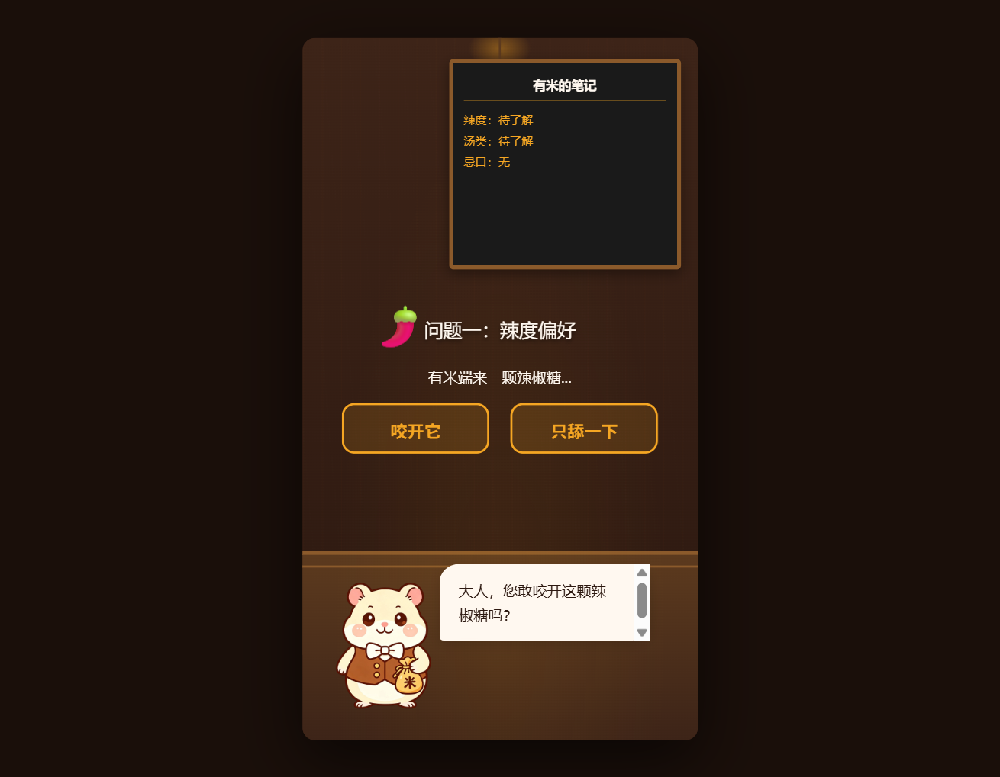
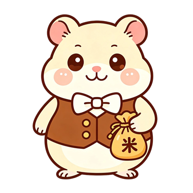
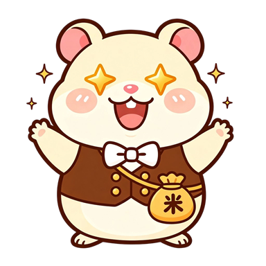
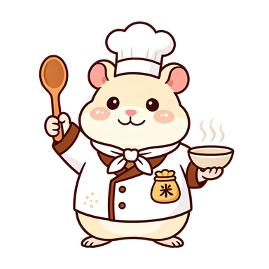
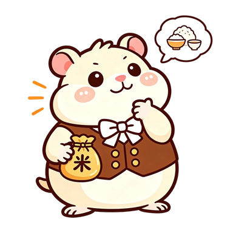
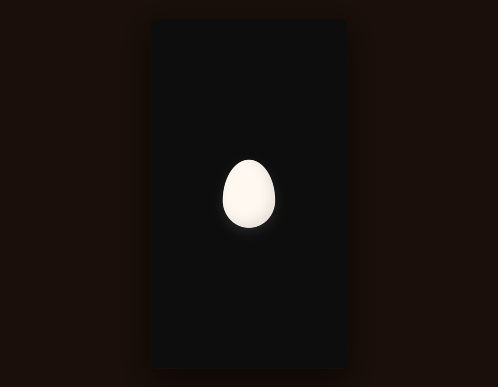
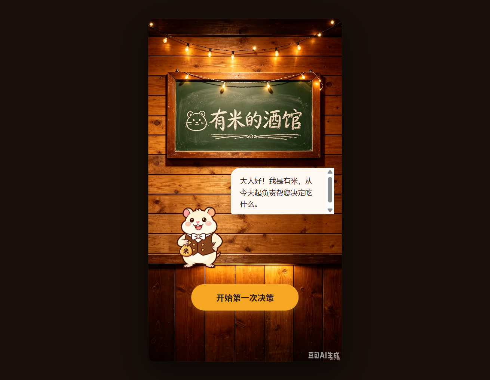

一只记得你口味的电子仓鼠侍者。「有米的小馆」是一款生活决策辅助 × 模拟养成 × 治愈陪伴的 Web 应用——主角有米帮你决定今天吃什么，但不是冷冰冰的随机数生成器，它会记住你不吃芹菜，记得下雨天你总想喝热汤，记得你连续吃辣三天后第四天该换换口味了。

奶白色的小仓鼠，戴着圆框眼镜，系着白色围裙，经营着一家隐藏在人类世界与食物世界之间的"经典小馆"。24 种 AI 生成表情姿态，全部抠图为透明背景，根据转盘状态实时切换——附带定时眨眼与闲置小动作。




表情分类：默认/日常 (10) · 侍者/互动 (6) · 孵化/登场 (3) · 转盘/反馈 (3) · 问候/互动 (2) — 共 24 种 AI 生成姿态
四个功能模块环环相扣——从认识你的口味，到帮你做决定，再到记住每一次反馈，让"今天吃什么"变成一场有温度的互动。
从蛋壳孵化开场，到口味偏好设置，再到权重转盘主界面——三个关键场景呈现有米小馆的完整体验。


五个阶段层层递进，从一只蛋开始，到一本记录你口味的小本本结束——每一步都在悄悄建立你与有米之间的默契。
转盘上每个扇区的大小不是随机的。有米把你的口味、当天的天气、历史反馈揉进一个加权公式里，让"爱吃的"更大、"吃腻的"更小。
纯前端单文件实现，零后端依赖。Canvas 状态栈、WebP 内嵌方案、Web Audio 音效合成与角色状态机，把一只治愈系仓鼠装进了 473KB。
有米的小馆不是工具，是一段关系。三层升级的情感曲线，让用户从"它挺有用"，慢慢走到"它在等我回家"。